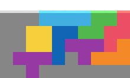

O DPC
Look for the 2-line on O DPC first and foremost.
ZST may be mirrored depending on L/J order for more TSD chance.
Also, this can be used to cheese 10PC on TETR.IO.
The red area in solve 1 can be filled in with OZT in two different ways, one giving a TSD.
Keep it in mind - it will appear in quite a few DPCs.
In solve 2, placing everything but TI and skimming line 3 still gives TSD (just without B2B).
I recommend taking solve 3 whenever you see early TI to avoid risks.
Notice how the L piece is always there.
If you ever misread queue, place OO and realise Butter isn't buildable, you can build Fake Butter.
It scores even worse than Kuruma due to only having the 2 in 3 quad. But hey, better than resetting.


I only attached the second solve because it is a surprise tool that will come in handy later.
Also, it may help reduce KPP with das-preserve JT placement.
May be used if there's no scoring and/or you don't care about it due to playing sprint.

Almost all solves are OZT shape + 4x4 box on the right.
Those few that aren't can be avoided by looking at queue,
and seeing if vertical TSS would make things easier (e.g. due to early S).
Yes, the green shape in Fig. 2 is the same OZT thing, except OST and on its side.
Placing L in the corner practically turns this shape into TSD DPC (Fig. 3).
Scores between Kuruma(+b2b) and Kuruma(nob2b).
Take this over Kuruma only if you didn't quad on 2nd.
Not much to say here.
If you didn't notice, there's a whopping three D/SPCs (butter, anku, rel) dedicated to dodging Kuruma.
Because it scores really trash. Yes it's simple, but it's that "baby DPC" that you grow out of.
Only take over Old Reliable SPC if you took quad on 2nd and nothing else works.
This DPC can also technically be taken on Z DPC (replace OJ heart with JZ heart).
But it's so bad it literally scores worse than l*me, so just take TSD DPC. Same coverage, better scoring.